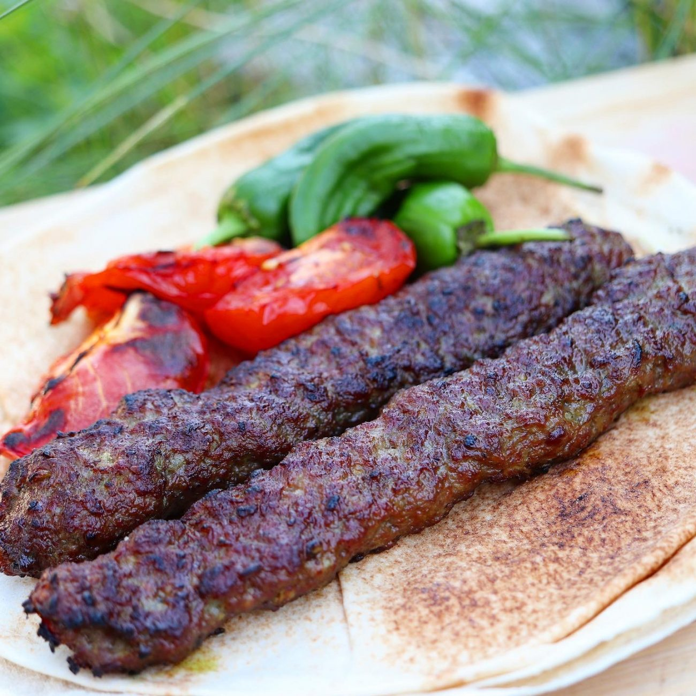
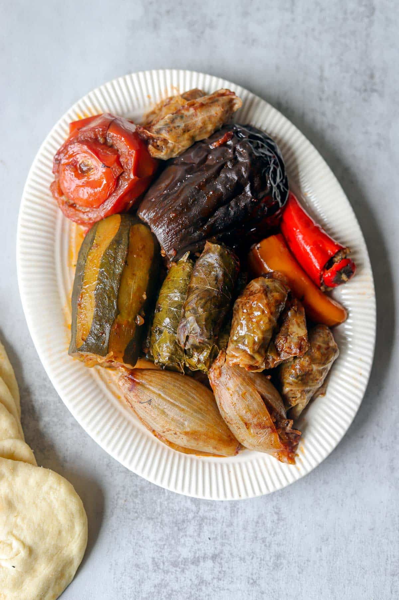
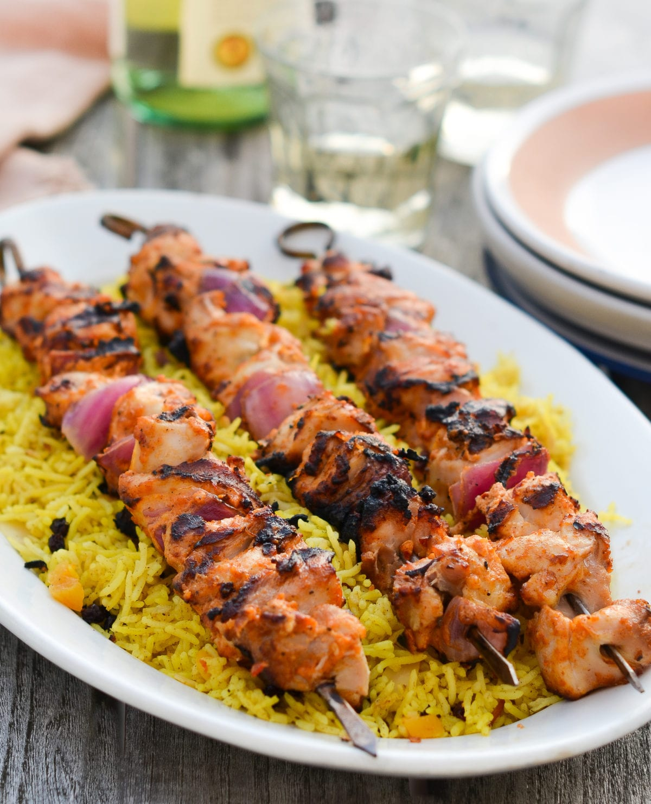

Restaurang Kurdistan opened in 2018 and offers delicious Kurdish cuisine including shish kebab, dolma, chicken skewers, and more.
We are open everyday between 11:30 to 20:00 everyday and our location is at Rönbärstigen 54, 41266 Göteborg.
We hope you'll visit and try our delicous food!
  